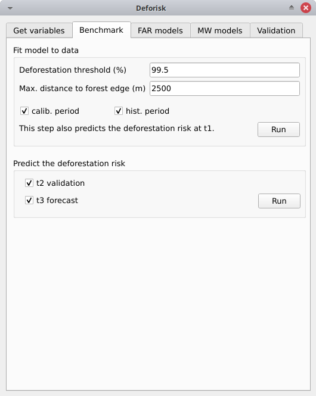

Empezar#
Introducción#
Abra QGIS en su ordenador. Para tener acceso a los mensajes de registro, active el panel «Mensajes de Registro» en QGIS yendo a Ver > Panel > Mensajes de Registro en el Menú. Cuando se utiliza un plugin, también es un buen hábito abrir la consola Python en QGIS para tener acceso a los mensajes Python devueltos en la consola. Para abrirla, haz clic en el icono de Python en la «Barra de herramientas de plugins». Si la barra de herramientas no está visible, actívela yendo a Ver > Barras de herramientas > Barra de herramientas de plugins en el Menú.
Una vez instalado el plugin (ver instrucciones para la instalación ), abre el plugin pulsando sobre su icono  . Deberías ver las versiones de las dependencias instaladas en tu entorno escritas en la consola de Python. Comprueba que estos números de versión corresponden a la última versión de cada dependencia. En caso contrario actualiza las dependencias.
. Deberías ver las versiones de las dependencias instaladas en tu entorno escritas en la consola de Python. Comprueba que estos números de versión corresponden a la última versión de cada dependencia. En caso contrario actualiza las dependencias.
osmconvert 0.8.10
osmfilter 1.4.4
geefcc 0.1.3
pywdpa 0.1.6
forestatrisk 1.2
riskmapjnr 1.3
Para probar el plugin y echar un primer vistazo a sus funcionalidades, pruébelo en una pequeña área de interés (AOI) como la isla Martinique (1128 km2) que tiene el código iso MTQ. Probar el plugin en una pequeña AOI tiene la ventaja de que los cálculos son rápidos y puedes ver directamente las salidas, interpretar los resultados y entender el funcionamiento del plugin.
Para entender mejor las distintas etapas, hay que tener en cuenta que estamos considerando distintos periodos y fechas para la calibración y validación del modelo.

Fechas y periodos utilizados para calibrar y validar los modelos. Modificado de Verra’s VT0007. En nuestro caso, hemos renombrado el periodo de t2 a t3 como periodo de «validación» en lugar de periodo de «confirmación».#
Obtener variables#

Working directory: Selecciona tu directorio de trabajo. Aquí/home/<username>/deforisk/MTQ-tuto, pero podría serC:\sers\<username>\deforisk\MTQ-tutoen Windows por ejemplo.Area Of Interest: MTQYears: 2000, 2010, 2020Forest data source: tmfTree cover threshold (%): 50 (podría dejarse vacío, no es útil aquí para la fuente de datos tmf)Tile size (dd): 1Country/state ISO code: MTQEarth Engine access: Nombre del proyecto de Google Cloud con acceso a Earth Engine o ruta a un archivo de clave privada JSON para la cuenta de servicio.WDPA access: Token personal de la API de la WDPA o ruta a un archivo de texto con la variable de entorno WDPA_KEY.Projection EPSG code: EPSG:5490
Haga clic en el botón Ejecutar. Aparecerá un mapa de cambios en la cubierta forestal en la lista de capas de QGIS (véase la imagen inferior y haga clic para ampliarla) y se creará un gráfico de los cambios en la cubierta forestal fcc123.png en la carpeta outputs/variables. Se crean nuevas carpetas en el directorio de trabajo, entre ellas la carpeta data_raw que incluye los datos originales con archivos intermedios y la carpeta data que incluye los datos procesados utilizados para los modelos y los gráficos. Puede visualizar la red de carreteras, por ejemplo, añadiendo el archivo vectorial roads_proj.shp, que se encuentra en el directorio data_raw, en QGIS.

Modelo de referencia#
Ajustar el modelo a los datos#
Deforestation threshold (%): 99,5%.Max. distance to forest edge (m): 2500calib. period: Comprobado, el modelo se ajusta sobre el periodo de calibración (t1–t2).hist. period: Si se marca, el modelo se ajusta al periodo histórico (t1–t3).
Haga clic en el botón Run para estimar el riesgo de deforestación con el modelo de referencia y predecir el riesgo de deforestación en t1 utilizando los datos de los periodos de calibración e histórico. Los mapas con clases de riesgo de deforestación se añaden a la lista de capas de QGIS (véase la imagen siguiente).
{kind=link}
En el directorio outputs/rmj_benchmark/ se crean nuevas carpetas con los resultados de cada periodo. En concreto, las carpetas de resultados incluyen el archivo <period>/perc_dist.png. Este archivo muestra el gráfico de la deforestación acumulada en función de la distancia al borde del bosque e indica los limites de distancia (aquí 240 m para el periodo de calibración).
{kind=link}
Limite de distancia para el periodo de calibración.#
Las carpetas de salida también incluyen la tabla <period>/defrate_cat_bm_<period>.csv que muestra las tasas de deforestación para cada clase de riesgo de deforestación (ver detalles aquí).
cat |
nfor |
ndefor |
rate_obs |
rate_mod |
rate_abs |
time_interval |
pixel_area |
defor_dens |
|---|---|---|---|---|---|---|---|---|
1001 |
33433 |
0 |
0.0 |
0.0 |
0.0 |
10 |
0.09 |
0.0 |
1002 |
12965 |
0 |
0.0 |
0.0 |
0.0 |
10 |
0.09 |
0.0 |
1003 |
91686 |
19 |
2.072e-05 |
2.072e-04 |
2.072e-04 |
10 |
0.09 |
1.865e-06 |
1004 |
82279 |
5 |
6.077e-06 |
6.076e-05 |
6.076e-05 |
10 |
0.09 |
5.469e-07 |
2001 |
1373 |
0 |
0.0 |
0.0 |
0.0 |
10 |
0.09 |
0.0 |
Predecir el riesgo de deforestación#
t2 validation: Marcado, calcula las predicciones en t2 para la validación (utilizando el modelo de referencia ajustado durante el periodo de calibración).t3 forecast: Marcado, calcula predicciones en t3 para previsión (utilizando el modelo de referencia ajustado sobre el periodo histórico).
Haga clic en el botón Run para predecir el riesgo de deforestación en t2 y t3 utilizando el modelo de referencia. Los mapas con clases de riesgo de deforestación se añaden a la lista de capas de QGIS y se añaden nuevos archivos a las carpetas de salida.
Modelos forestatrisk#

Observaciones por muestreo#
N# samples: 10000Adapt sampling: Marcado, el número de observaciones es proporcional a la superficie forestal.Random seed: 1234Spatial cell size (km): 2calib. period: Marcado, las observaciones se muestrean para el periodo de calibración (t1–t2).hist. period: Marcado, las observaciones se muestrean para el periodo histórico (t1–t3).
Al pulsar el botón Run en este cuadro se muestrearán las observaciones. Una vez finalizada la operación, las observaciones muestreadas aparecerán en la lista de capas de QGIS.

Se crean nuevas carpetas con los resultados en el directorio outputs/far_models/ incluyendo el archivo <period>/sample.txt que es el conjunto de datos de observación con los valores de las variables.
altitude |
dist_edge |
dist_river |
dist_road |
dist_town |
fcc |
pa |
slope |
X |
Y |
cell |
|---|---|---|---|---|---|---|---|---|---|---|
56 |
30 |
750 |
0 |
150 |
0 |
1 |
6 |
700155 |
1645545 |
63 |
56 |
30 |
750 |
0 |
150 |
0 |
1 |
6 |
700185 |
1645545 |
63 |
100 |
30 |
875 |
0 |
1657 |
0 |
1 |
5 |
698265 |
1645425 |
62 |
93 |
30 |
600 |
0 |
1358 |
0 |
1 |
8 |
698565 |
1645425 |
62 |
68 |
30 |
300 |
0 |
335 |
0 |
1 |
7 |
699615 |
1645425 |
63 |
Ajustar el modelo a los datos#
List of variables: Dejar vacío, utilizará la fórmula por defecto:C(pa) + altitude + slope + dist_edge + dist_road + dist_river + dist_town.Starting values for betas: -99Prior Vrho: -1MCMC: 100Variable selection: Dejar sin marcar, sin selección de variables (hace los cálculos más rápidos para este ejemplo).calib. period: Comprobado, los modelos se ajustan durante el periodo de calibración (t1–t2).hist. period: Marcado, los modelos se ajustan sobre el periodo histórico (t1–t3).
Al pulsar el botón Run en este cuadro se ajustará el modelo estadístico a las observaciones de deforestación. Se ajustan tres modelos estadísticos (modelo iCAR, GLM y modelo Random Forest). Se añaden nuevos archivos a las carpetas outputs/far_models/calibration y outputs/far_models/historical. En concreto, el archivo summary_icar.txt es el resumen del modelo iCAR con la media, la desviación estándar y los intervalos de credibilidad de los parámetros del modelo.
Mean |
Std |
CI_low |
CI_high |
|
|---|---|---|---|---|
Intercept |
-3.39 |
0.158 |
-3.7 |
-3.1 |
C(pa)[T.1.0] |
-0.0915 |
0.122 |
-0.282 |
0.172 |
scale(dist_edge) |
-10.3 |
0.417 |
-11.1 |
-9.63 |
scale(dist_road) |
-0.256 |
0.0537 |
-0.36 |
-0.144 |
scale(dist_town) |
0.0342 |
0.0464 |
-0.0551 |
0.123 |
scale(dist_river) |
-0.0817 |
0.0544 |
-0.188 |
0.0199 |
scale(altitude) |
-0.554 |
0.0809 |
-0.728 |
-0.4 |
scale(slope) |
-0.532 |
0.0392 |
-0.611 |
-0.457 |
Vrho |
6.89 |
0.756 |
5.64 |
8.49 |
Deviance |
1.36e+04 |
24.9 |
1.36e+04 |
1.37e+04 |
El archivo model_deviances.csv incluye una tabla para comparar el porcentaje de desviación explicada entre modelos.
model |
deviance |
perc |
|---|---|---|
null |
26769.0 |
0.0 |
glm |
16864.0 |
37.0 |
rf |
6668.0 |
75.0 |
icar |
13636.0 |
49.0 |
full |
0.0 |
100.0 |
Predecir el riesgo de deforestación#
iCAR model: Marcado, calcula predicciones con el modelo iCAR.GLM: Comprobado, calcula predicciones con GLM.RF model: Marcado, calcula predicciones con el modelo Random Forest.t1 calibration: Comprobado, calcula predicciones en t1 utilizando modelos ajustados durante el periodo de calibración.t2 validation: Marcado, calcula predicciones en t2 para la validación (utilizando modelos ajustados durante el periodo de calibración).t1 historical: Comprobado, calcula predicciones en t1 utilizando modelos ajustados en el periodo histórico.t3 forecast: Marcado, calcula predicciones en t3 para previsión (usando modelos ajustados sobre el periodo histórico).
Al pulsar el botón Run en este cuadro se utilizarán los modelos estadísticos para las predicciones. Una vez finalizada la operación, los rásters que representan las clases de riesgo de deforestación aparecen en la lista de capas de QGIS. Se crean nuevas carpetas outputs/far_models/validation y outputs/far_models/forecast. Incluyen las tablas <period>/defrate_cat_<model>_<period>.csv con las tasas de deforestación para cada clase de riesgo de deforestación (ver detalles aquí).

Modelos de ventanas móviles#

Ajustar el modelo a los datos#
Deforestation threshold (%): 99,5%.Max. distance to forest edge (m): 2500Window sizes (# pixels): 11, 21calib. period: Comprobado, el modelo se ajusta sobre el periodo de calibración (t1–t2).hist. period: Si se marca, el modelo se ajusta al periodo histórico (t1–t3).
Haga clic en el botón Run para estimar el riesgo de deforestación con el modelo de ventana móvil utilizando datos de los periodos de calibración e histórico. Se crean nuevas carpetas con los resultados en el directorio outputs/rmj_moving_window/ incluyendo el archivo raster <period>/ldefrate_mw_<window_size>.tif con las tasas locales de deforestación reescaladas en [2, 65535].
Predecir el riesgo de deforestación#
t2 validation: Marcado, calcula predicciones en t2 para la validación (usando el modelo de ventana móvil ajustado sobre el periodo de calibración).t3 forecast: Marcado, calcula predicciones en t3 para la previsión (utilizando el modelo de ventana móvil ajustado sobre el periodo histórico).
Haga clic en el botón Run para predecir el riesgo de deforestación en t2 y t3 utilizando el modelo de ventana móvil. Los mapas con las clases de riesgo de deforestación se añaden a la lista de capas de QGIS (ver imagen inferior) y se crean nuevas carpetas con los resultados en el directorio outputs/rmj_moving_window/, incluyendo las tablas <period>/defrate_cat_mv_<window_size>_<period>.csv con las tasas de deforestación para cada clase de riesgo de deforestación (ver detalles aquí).

Validación#
Coarse grid cell size (# pixels): 50, 100iCAR model: Marcado, estima el rendimiento del modelo iCAR.GLM: Marcado, estima el rendimiento del GLM.RF model: Marcado, estima el rendimiento del modelo Random Forest.MW model: Comprobado, estima el rendimiento de los modelos de ventana móvil.calib. period: Comprobado, estima el rendimiento del modelo para el periodo de calibración (t1–t2).valid. period: Comprobado, estima el rendimiento del modelo para el periodo de validación (t2–t3).hist. period: Comprobado, estima el rendimiento del modelo para el periodo histórico (t1–t3).
Al pulsar el botón «Run» en este cuadro se calculará el área deforestada prevista en cada celda de la cuadrícula para cada modelo y cada período seleccionado y se comparará este valor con el área deforestada observada para la misma celda de la cuadrícula y el mismo período.
Se crean nuevas carpetas para cada periodo: outputs/model_validation/<period>/figures y outputs/model_validation/<period>/tables. En cada carpeta se añaden varios archivos de salida.
Archivos figures/pred_obs_<model>_<period>_<cell_size>.png que muestran el gráfico del área deforestada predicha frente a la observada. El gráfico muestra los valores del área deforestada predicha y observada en cada celda de la cuadrícula como puntos y la línea de uno a uno. El gráfico muestra también el número de celdas de la cuadrícula (o puntos) y los valores de dos de los índices de rendimiento: el \(R^{2}\) y el MedAE.

El archivo outputs/model_validation/indices_all.csv incluye una tabla con los índices de rendimiento para todos los tamaños de celda de validación, todos los modelos y todos los periodos. En este ejemplo, tanto el modelo Random Forest como el modelo iCAR son mejores que el modelo de referencia sean cuales sean los índices de rendimiento considerados. El modelo iCAR es el mejor porque tiene el MedAE más bajo, el RMSE más bajo y el \(R^{2}\) más alto para el periodo de validación, que es el único periodo con datos independientes (es decir, que no se han utilizado para calibrar los modelos). Esto es así sea cual sea el tamaño de celda de validación elegido.
csize_coarse_grid |
csize_coarse_grid_ha |
ncell |
period |
model |
MedAE |
R2 |
RMSE |
wRMSE |
|---|---|---|---|---|---|---|---|---|
50 |
225.0 |
604 |
validation |
bm |
2.71 |
0.43 |
6.08 |
6.22 |
50 |
225.0 |
604 |
validation |
icar |
1.78 |
0.65 |
4.79 |
4.59 |
50 |
225.0 |
604 |
validation |
glm |
2.39 |
0.38 |
6.39 |
6.52 |
50 |
225.0 |
604 |
validation |
rf |
2.09 |
0.50 |
5.69 |
5.74 |
50 |
225.0 |
604 |
validation |
mw_11 |
2.34 |
0.56 |
7.66 |
6.83 |
50 |
225.0 |
604 |
validation |
mw_21 |
2.51 |
0.56 |
7.54 |
6.66 |
Conclusión#
El mapa de riesgo de deforestación obtenido con el modelo iCAR en t3 puede utilizarse para asignar la deforestación después del año 2020. Tanto el mapa de riesgo con las clases de deforestación de 1 a 65535 como la tabla defrate_cat_icar_forecast.csv con las tasas de deforestación para todas las clases de riesgo de deforestación son necesarios para asignar la deforestación en el futuro.
La tabla sólo incluye valores para rate_mod, las tasas relativas de deforestación espacial del modelo iCAR estimadas en el periodo histórico. En cuanto al paso de validación, la deforestación debe ajustarse cuantitativamente en función de la cantidad de deforestación prevista en el futuro.
cat |
nfor |
ndefor |
rate_obs |
rate_mod |
rate_abs |
time_interval |
pixel_area |
defor_dens |
|---|---|---|---|---|---|---|---|---|
1 |
137575 |
0 |
0.0 |
1e-06 |
0.0 |
20 |
0.09 |
0.0 |
2 |
5425 |
0 |
0.0 |
1.6259239478743857e-05 |
0.0 |
20 |
0.09 |
0.0 |
3 |
3523 |
0 |
0.0 |
3.151847895748772e-05 |
0.0 |
20 |
0.09 |
0.0 |
4 |
2458 |
0 |
0.0 |
4.677771843623157e-05 |
0.0 |
20 |
0.09 |
0.0 |
5 |
2078 |
0 |
0.0 |
6.203695791497542e-05 |
0.0 |
20 |
0.09 |
0.0 |
Considerando una deforestación total \(D\) (en ha) para los próximos \(Y\) años a nivel jurisdiccional, el factor de ajuste es \(\rho = D / (A \sum_i n_{i} \theta_{m,i})\), siendo \(A\) el área del píxel en ha, la tasa absoluta es \(\theta_{a,i} = \rho \theta_{m,i}\), y la densidad de deforestación es \(\delta_{i} = \theta_{a,i} \times A / Y\). La densidad de deforestación \(\delta_{i}\) se utiliza para predecir la cantidad de deforestación (en ha/año) para cada píxel forestal perteneciente a una clase determinada de riesgo de deforestación para los próximos \(Y\) años (para las notaciones, véanse los detalles aquí).
El mapa de riesgo, junto con la tabla de densidad de deforestación computada, puede ser utilizado para asignar proporcionalmente fracciones de la línea de base de datos de la actividad de deforestación no planificada jurisdiccional (en el contexto de VMD0055) o del FREL jurisdiccional (en el contexto del Marco VCS Jurisdiccional y Anidado de REDD+) a proyectos o programas a ser implementados dentro de la jurisdicción. Para eso, se debe calcular una tabla con el número de píxeles para cada clase de riesgo de deforestación en el área del proyecto. Esto se hace fácilmente con las herramientas de QGIS Raster > Extracción > Recortar raster por capa de máscara para recortar el mapa de riesgo hasta el límite del proyecto y Procesamiento > Caja de herramientas > Informe de valores únicos de capa raster.
{kind=link}
Asignación de la deforestación a proyectos dentro de la jurisdicción.#